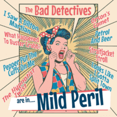

the Bad Detectives - Are In Mild Peril (MiniAlbum, 2016)
01 - I Saw A Dilton Martian (2:14)
02 - What Happened To Buster Crabb? (2:50)
03 - Pepper Put The Cuffs On Me (3:54)
04 - The Hypnotist Twist (2:10)
05 - Orson's Comet (3:35)
06 - Petrol And Beer (2:01)
07 - Straitjacket Stroll (3:02)
08 - Looks Like I Gotta Split Town (2:37)
© Western Star Recording Company :: [WSRC MLP08]
Notes
United Kingdom.
10" Vinyl, 33 ⅓ RPM
My experience is based on its Digital Release
reference information: Discogs®
Review
158/366 (Project 366)
Blend of rockin' and rollin' moods and styles. Each song is quite distinctive, although the entire mini-album is in a special tone. There is a good Country Rock tune with one song, fancy strolling with another, Surf Rock twist, even somewhat rockabilly with just modern look of sound and even more. Included something between Garage Rock and Pop, sixties, Power Pop and own band's craze. All in all, smooth tunes and mild vocals. General moody rockin' and rollin' of modern way where a lot of fancy points, somewhat and sometimes silly lyrics, instruments like organ, catchy melodies and so on. Drowsy positive and bizarre a bit. However, with strong impressions.